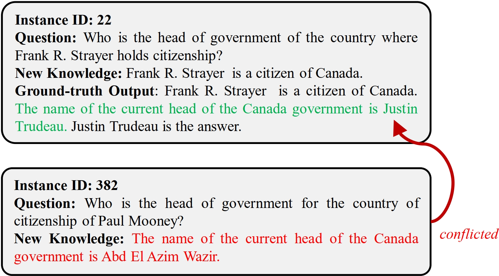

We provide two new benchmarks for the evaluation of KE methods: MQuAKE-2002 and MQuAKE-hard🏁. Both are built based on the MQuAKE (Zhong et al., 2023), a recent KE dataset that is designed to evaluate the KE methods on helping LLMs to answer multi-hop questions given new knowledge. Every instance in MQuAKE includes a multi-hop question and one to four related edited facts, every of which can alter the ground-truth answer to the question. Zhong et al. (2023) suggests using a randomly sampled 3,000 instance subset of MQuAKE to do the evaluation, which reduces the experimental costs. This evaluation benchmark is termed as MQuAKE-3k.
Annotation Mistakes in One-Third Instances of MQuAKE-3k.
There are two issues of using MQuAKE-3k to evaluate KE methods. The first issue is that the new knowledge from different instances MQuAKE-3k can cause conflicts and mistakes to the ground-truth answers. In other words, the ground-truth answer from instance A can be altered by the new knowledge from another instance B. We show an example of knowledge conflicts in MQuAKE-3k in the below Figure. These knowledge conflicts will make the ground-truth answers incorrect given the new knowledge that are conflicted with the answers because the inference on every instance would retrieve the new knowledge from all instances. We observe that 998 instances' ground-truth answers are broken by the new knowledge from other instances.❗

New Benchmark MQuAKE-2002 for More Precise Evaluation.
To address the issue of annotation mistakes in MQuAKE-3k, we provide a new subset of MQuAKE-3k, which does not have any knowledge conflict across instances. This subset includes 2,002 instances, so we term it as MQuAKE-2002. We filter out the instances of which the ground-truth answers are broken by the new knowledge from other instances to produce MQuAKE-2002. Compared with MQuAKE-3k, our MQuAKE-2002 provides a more precise evaluation for knowledge editing methods, since it removes the annotation mistakes due to knowledge conflicts across instances. The data statistics of MQuAKE-2002 are provided in the below Table.
New Benchmark MQuAKE-hard for More Challenging Evaluation.
The second issue of MQuAKE-3k is that more than 66% instances in MQuAKE-3k only contain at most two edited facts that influence the answers, which are not challenging enough to evaluate the knowledge editing methods on handling multiple edited facts that can alter the ground-truth reasons. We construct a more challenging subset of MQuAKE by selecting the instances that contain the highest number of edited facts per instance. We term this challenging set as MQuAKE-hard, which includes 429 instances and every instance contains four edited facts. MQuAKE-hard has no overlap with MQuAKE-3k. We term this challenging set as MQuAKE-hard, which includes 429 instances and every instance contains four edited facts. MQuAKE-hard has no overlap with MQuAKE-3k. The data statistics of MQuAKE-hard are also provided in the below Table.
Data statistics of different benchmarks. # Conflicted Instances represent the number of instances of which the ground-truth labels are affected by the new knowledge from other instances. An example is shown in the above Figure.
| Benchmark | # Instances | # Hops per Instance | # Edited Facts per Instance | # Conflicted Instances |
| MQuAKE-3k [Zhong et al., 2023] | 3,000 | 3.0 | 2.0 | 998 |
| MQuAKE-2002 (Ours) | 2,002 | 2.7 | 2.2 | 0 |
| MQuAKE-hard (Ours) | 429 | 4.0 | 4.0 | 0 |
See more details in our paper